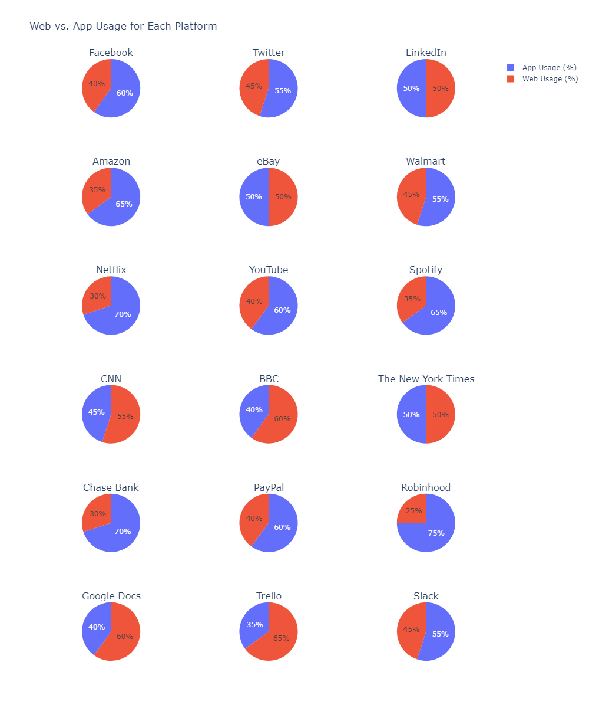
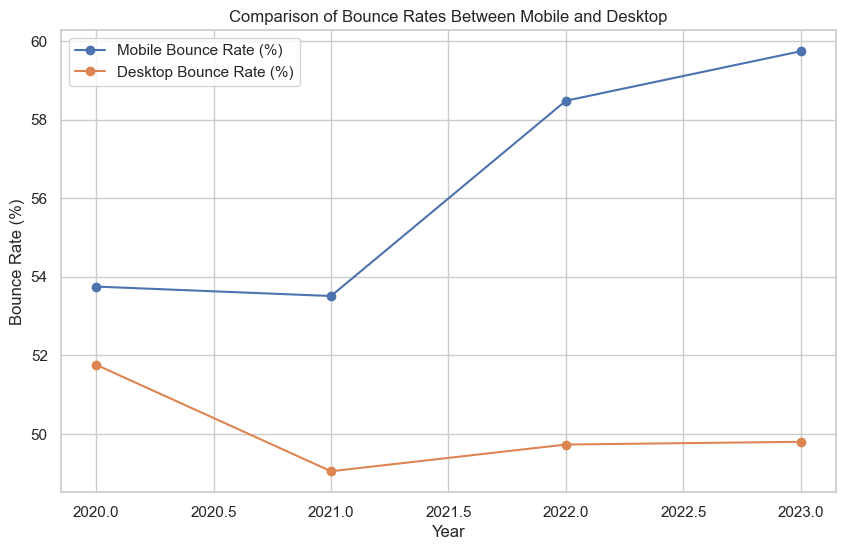
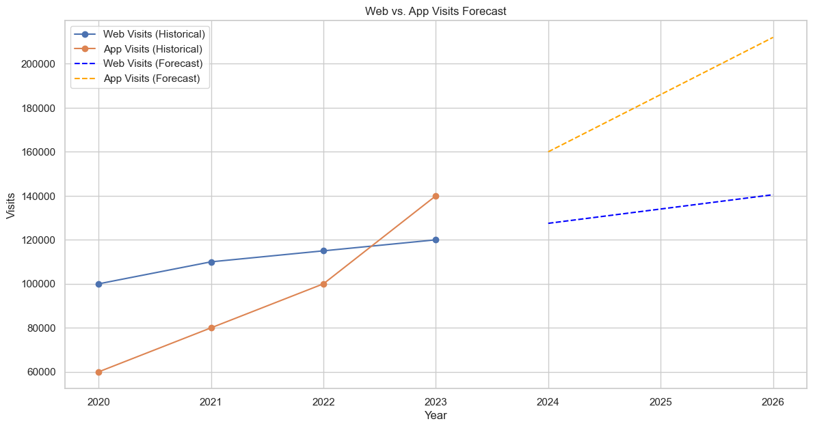

May 2024
App vs Web Usage Analysis
Exploratory analysis of web and app usage patterns across platforms.



Question
How do mobile and web usage patterns differ across platforms, and what do the available engagement measures suggest about changing user behaviour?
Analysis
I explored usage, bounce rate, visit duration and demographic patterns, then added a simple forecast view to practise communicating trends over time.